Spring事务常见错误
本文最后更新于：2022年8月12日 晚上
unchecked异常与事务回滚
1 | |
我们通过 debug 沿着 saveStudent 继续往下跟，得到了一个这样的调用栈:
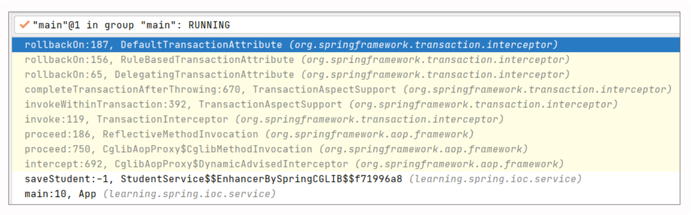
从这个调用栈中我们看到了熟悉的 CglibAopProxy，另外事务本质上也是一种特殊的切面，在创建的过程中，被 CglibAopProxy 代理。事务处理的拦截器是TransactionInterceptor，它支撑着整个事务功能的架构，我们来分析下这个拦截器是如何实现事务特性的。
首先，TransactionInterceptor 继承类 TransactionAspectSupport，实现了接口MethodInterceptor。当执行代理类的目标方法时，会触发 invoke()。由于我们的关注重点是在异常处理上，所以直奔主题，跳到异常处理相关的部分。当它 catch 到异常时，会调用 completeTransactionAfterThrowing 方法做进一步处理。
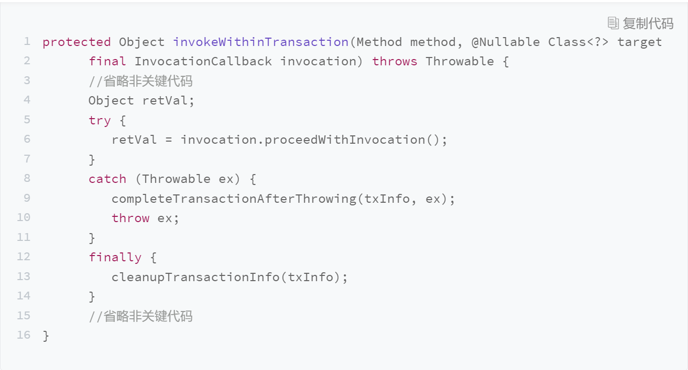
在 completeTransactionAfterThrowing 的代码中，有这样一个方法 rollbackOn()，这是事务的回滚的关键判断条件。当这个条件满足时，会触发 rollback 操作，事务回滚。
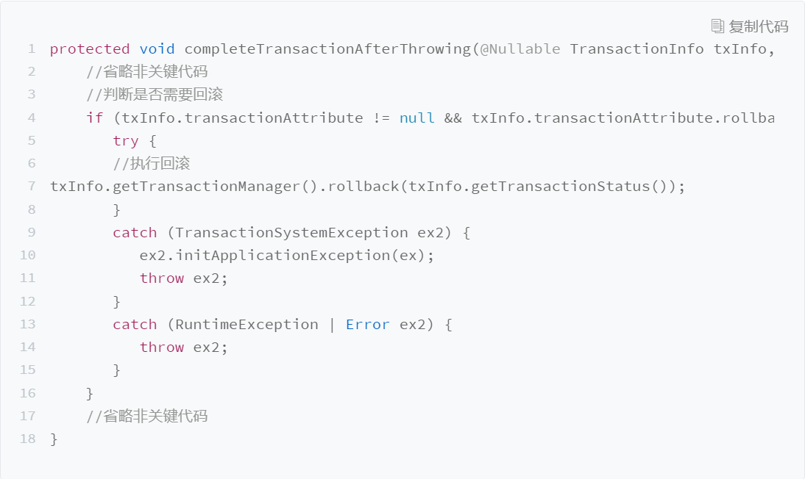
rollbackOn() 其实包括了两个层级，具体可参考如下代码：
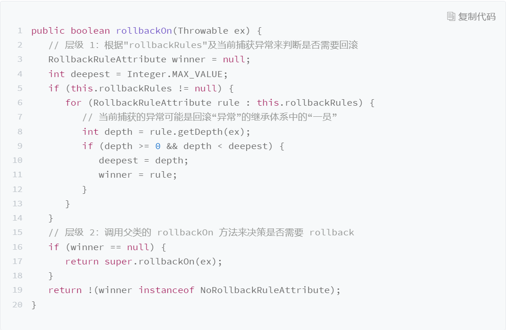
1.RuleBasedTransactionAttribute 自身的 rollbackOn()
当我们在 @Transactional 中配置了 rollbackFor，这个方法就会用捕获到的异常和rollbackFor 中配置的异常做比较。如果捕获到的异常是 rollbackFor 配置的异常或其子类，就会直接 rollback。在我们的案例中，由于在事务的注解中没有加任何规则，所以这段逻辑处理其实找不到规则（即 winner == null），进而走到下一步。
2.RuleBasedTransactionAttribute 父类 DefaultTransactionAttribute 的 rollbackOn()
如果没有在 @Transactional 中配置 rollback 属性，或是捕获到的异常和所配置异常的类型不一致，就会继续调用父类的 rollbackOn() 进行处理。
而在父类的 rollbackOn() 中，我们发现了一个重要的线索，只有在异常类型为RuntimeException 或者 Error 的时候才会返回 true，此时，会触发completeTransactionAfterThrowing 方法中的 rollback 操作，事务被回滚。
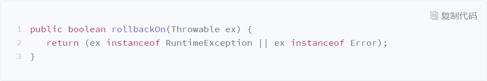
查到这里，真相大白，Spring 处理事务的时候，如果没有在 @Transactional 中配置rollback 属性，那么只有捕获到 RuntimeException 或者 Error 的时候才会触发回滚操作。而我们案例抛出的异常是 Exception，又没有指定与之匹配的回滚规则，所以我们不能触发回滚。
试图给private方法添加事务
1 | |
通过debug，我们一步步寻找到了问题的根源，得到了以下调用栈。我们通过 Spring的源码来解析一下完整的过程。

前一段是 Spring 创建 Bean 的过程。当 Bean 初始化之后，开始尝试代理操作，这个过程是从 AbstractAutoProxyCreator 里的 postProcessAfterInitialization 方法开始处理的：
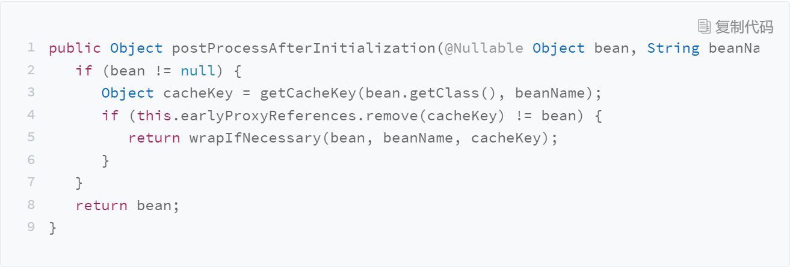
我们一路往下找，暂且略过那些非关键要素的代码，直到到了 AopUtils 的 canApply 方法。这个方法就是针对切面定义里的条件，确定这个方法是否可以被应用创建成代理。其中有一段 methodMatcher.matches(method, targetClass) 是用来判断这个方法是否符合这样的条件：
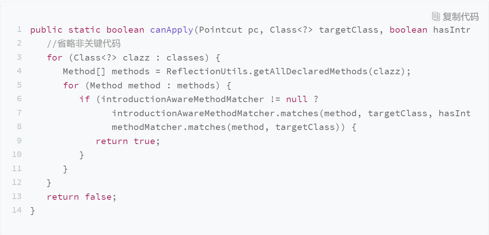
从 matches() 调用到了 AbstractFallbackTransactionAttributeSource的getTransactionAttribute：
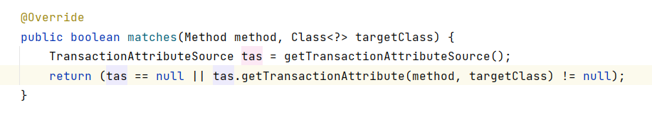
其中，getTransactionAttribute 这个方法是用来获取注解中的事务属性，根据属性确定事务采用什么样的策略。
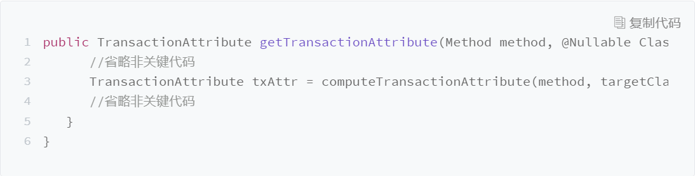
接着调用到 computeTransactionAttribute 这个方法，其主要功能是根据方法和类的类型确定是否返回事务属性，执行代码如下：
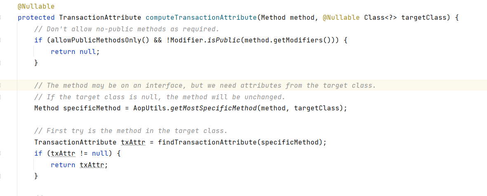
这里有这样一个判断 allowPublicMethodsOnly() &&!Modifier.isPublic(method.getModifiers()) ，当这个判断结果为 true 的时候返回 null，也就意味着这个方法不会被代理，从而导致事务的注解不会生效。那此处的判断值到底是不是 true 呢？我们可以分别看一下。
条件 1：allowPublicMethodsOnly()
allowPublicMethodsOnly 返回了 AnnotationTransactionAttributeSource的publicMethodsOnly 属性。
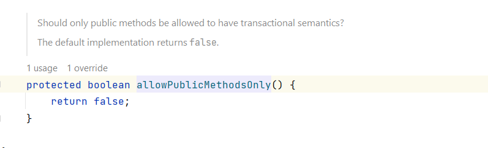
springframework:5.2.5.RELEASE,不同版本默认值不同
这个publicMethodsOnly 属性是通过 AnnotationTransactionAttributeSource 的构造方法初始化的，默认为 false。
条件 2：Modifier.isPublic()
这个方法根据传入的 method.getModifiers() 获取方法的修饰符。该修饰符是java.lang.reflect.Modifier 的静态属性，对应的几类修饰符分别是：PUBLIC: 1，PRIVATE: 2，PROTECTED: 4。这里面做了一个位运算，只有当传入的方法修饰符是public 类型的时候，才返回 true。
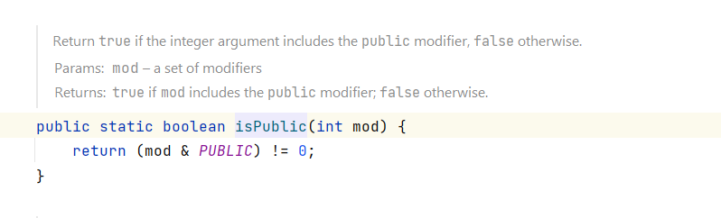
综合上述两个条件，你会发现，只有当注解为事务的方法被声明为 public 的时候，才会被Spring 处理。
问题修正
了解了问题的根源以后，解决它就变得很简单了，我们只需要把它的修饰符从 private 改成 public 就可以了。不过需要额外补充的是，我们调用这个加了事务注解的方法，必须是调用被 Spring AOP代理过的方法，也就是不能通过类的内部调用或者通过 this 的方式调用。
所以我们的案例的 StudentService，它含有一个自动装配（Autowired）了自身（StudentService）的实例来完成代理方法的调用。这个问题我们在之前 Spring AOP 的代码解析中重点强调过，此处就不再详述了。